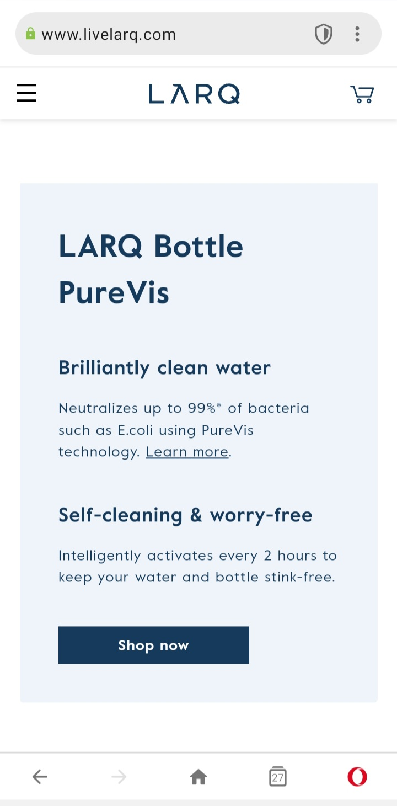
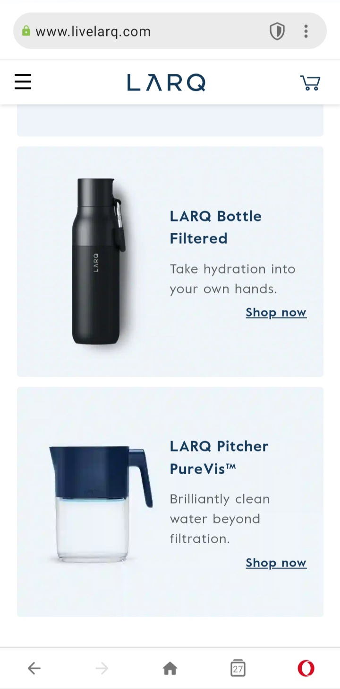
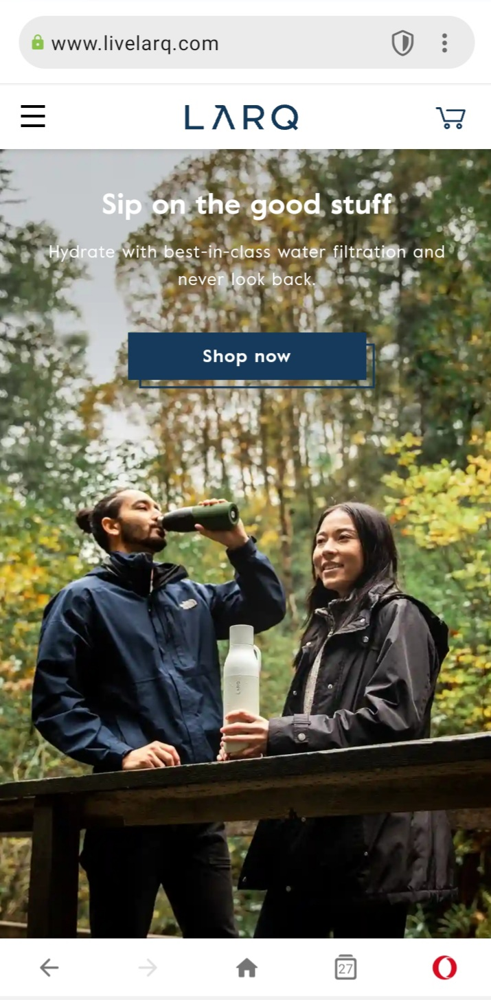

White Space Principle
This page has proper white space between each element. Each element has a proper margin and a proper padding. Different elements do not touch each other. The white spacing enhanced readability by making it easier to follow content and see elements on the page.
PARC: Repetition
The product sections have the same color scheme. The font treatment is consistent throughout the site. The images are always placed in a similar location. The clickable element are always dark blue. They repeat the brand color through out the page.
Rule of Thirds

If we place a simple grid overlay (divided equally into thirds, both horizontally and vertically) on the hero image of the website, we will see that the text is on the top third of the image. The text is placed where the viewer will look first while seeing the image.